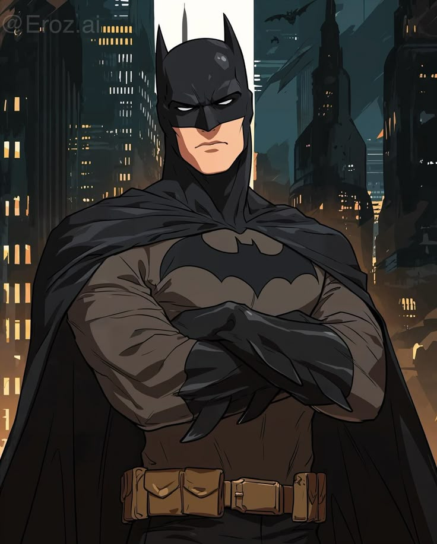

Amigos míos,
He tenido un día verdaderamente extraño, lleno de aventuras que quiero compartir con vosotros.
La noble doncella Emma me informó de un evento que se llama “Comic Con", en el que caballeros, soldados y héroes de distintos rincones del mundo se reúnen para discutir la situación del universo.
Al entrar en la gran sala, quedé maravillado. Era inmensa y estaba llena de personas peculiares que, sin duda, habían viajado desde tierras lejanas, ¡incluso desde otros mundos! Sus pieles eran de diversos colores, portaban armas distintas y vestían de maneras fascinantes. La escena era hipnotizante.
Saludé a varios caballeros como yo. Desafortunadamente, no encontré ni a Amadís ni a Don Don Eltono Juan, pero tuve la oportunidad de conversar con un caballero muy curioso que se hacía llamar Don Batman de la Gotham. Me contó que él también es un defensor de la justicia, dedicado a la protección de su gente. Hablamos sobre el honor, la virtud y el coraje, valores fundamentales para todo caballero. ¡Lo que más me sorprendió fue que no tenía escudero! No puedo imaginar ir por el mundo sin mi fiel Sancho.
 Imagen por eroz.ai vía PinterestSin embargo, queridos lectores, no todo era nobleza y valentía en esta fiesta, pues también estaba infiltrado por villanos dispuestos a sembrar el caos. Uno de ellos era un temible hechicero conocido como Darth Vader. Vestía una oscura armadura y una capa negra, y en su mano tenía una espada encantada que cambiaba de color. Había capturado a una princesa indefensa y se negaba a liberarla.
Imagen vía PinterestNo podía permitir tanta injusticia. Me planté frente a él y le exigí que la soltara. Al negarse, le reté a un duelo. ¡Por el honor de Dulcinea y la justicia, me lancé a la batalla! Fue un difícil duelo, pero al final, el malvado caballero cayó derrotado ante mí.
Así concluyó mi jornada, amigos míos, con la certeza de que la virtud y la caballería aún pueden triunfar sobre las sombras.